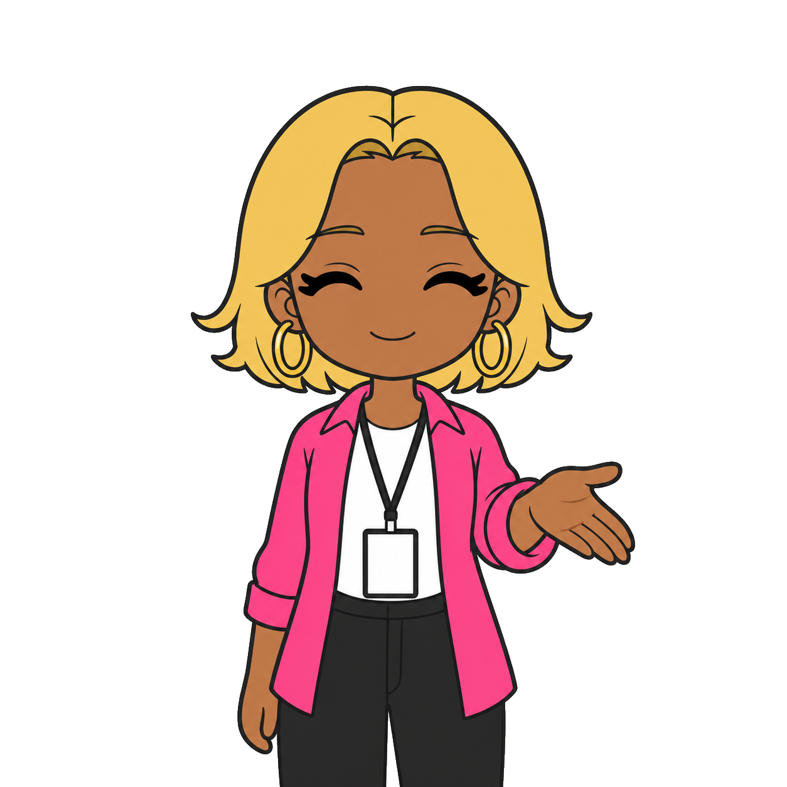

第3章 キャラクター設計
この章でわかること
- キャラクター設定で決めるべき14項目
- 「毎回顔が変わる問題」を防ぐ方法
- 頭身・線の太さ・色数が小さい画面でどう効くか
- 禁止事項を先に決める理由
- キャラクター設定シートの書き方
- 実例：AI活用コンサルタント「アイナ」の設計一式
なぜ設定を先に文章で書くのか
結論。
設定を文章にしておかないと、40枚のあいだに顔が変わります。
画像生成AIは、毎回ゼロから絵を描きます。
前回の絵を覚えていません（覚えているように見えても、記憶ではなく参照です）。
だから、こうなります。
- 1枚目：髪が肩まで
- 5枚目：髪が短い
- 12枚目：肌の色が違う
- 20枚目：年齢が10歳上がっている
こうなると、40枚が「同じシリーズ」に見えません。
審査で「類似性がない」と判断される可能性もありますが、それ以前に、買う人が違和感を持ちます。
対策は1つです。
キャラクター設定を、毎回コピーして貼る文章として持つ。
これだけで、ブレは激減します。
キャラクター設定で決める14項目
順番に決めていきます。
上から埋めるだけで設定が完成します。
1. 名前
キャラクターに名前をつけます。
理由は2つ。
- 自分が愛着を持てる
- SNSで紹介するときに語れる
実在の人物名は避けてください。
有名人と同じ名前も避けます。
2. 性格
3語で書きます。
例：陽気 / 面倒見がいい / せっかち
3語あると、セリフの口調が自動で決まります。
3. 年齢感
「20代後半」「30代前半」のような幅で書きます。
具体的な年齢よりも「見た目の年齢感」が大事です。
画像生成AIには年齢感のほうが伝わります。
4. 職業
スタンプの型が「職業特化型」なら、ここが核になります。
職業がわかる小物を1つ決めておくと便利です。
例：保育士ならエプロン、鮨職人なら白衣と鉢巻、コンサルならノートパソコン。
5. 服装
上・下・小物の3つに分けて決めます。
毎回同じ服にします。
服が変わると、別人に見えます。
6. 髪型
長さ、色、前髪、結び方まで決めます。
ここが一番ブレやすい項目です。
例：「肩までのゆるいウェーブ、明るい茶色、前髪は流している」
7. 色（カラーパレット）
肌、髪、服、アクセントの4色を決めます。
色コード（#から始まる6桁）まで決めると、加工時に迷いません。
小さい画面で見るので、色は濃いめにします。
薄い色は、スマートフォンで消えます。
8. 表情のバリエーション
40枚ぶんの表情を、先にリスト化します。
最低これだけあれば足ります。
- 笑顔（大）
- 笑顔（小）
- 驚き
- 困り顔
- 泣き
- 怒り（軽め）
- 真剣
- 眠い
- 得意げ
- 応援
9. 頭身
頭何個ぶんの身長か、という指標です。
| 頭身 | 見え方 | スタンプ向き |
|---|---|---|
| 2頭身 | 顔が大きく、体が小さい | ◎ とても向く |
| 3頭身 | バランス型 | ◎ 向く |
| 5頭身以上 | リアル寄り。顔が小さい | △ 顔が潰れる |
スタンプはとても小さく表示されます。
顔が大きいほうが有利です。
迷ったら2〜3頭身にしてください。
10. 線の太さ
太めにします。
理由は、縮小したときに線が消えるからです。
目安：370×320pxの画像で、輪郭線が3〜5px程度の太さに見えること。
11. 背景
スタンプ画像の背景は透過です。
キャラクターの後ろに何も描きません。
ただし、メイン画像だけは背景を入れることがあります（第6章）。
12. 世界観
キャラクターがどんな場所にいるか、という設定です。
スタンプには背景を描きませんが、世界観を決めると小物の選び方が安定します。
例：「都心のコワーキングスペースで働いている」
13. 話し方
セリフの口調を決めます。
- 語尾（〜だよ / 〜です / 〜っしょ）
- 一人称（私 / 僕 / オレ / アタシ）
- テンション（高い / 落ち着いている）
- よく使う言葉（口ぐせ）
第4章のセリフ作成が、ここで決まります。
14. 禁止事項
先に決めるのが重要です。
画像生成AIに毎回「これは描かない」と伝えるためです。
最低限、次を入れます。
- 実在人物に似せない
- 既存アニメ・漫画・ゲームのキャラクターに似せない
- 企業ロゴ、商標、ブランド名を入れない
- 過度な露出、暴力、差別的表現を入れない
- 背景を描かない（スタンプ画像の場合）
- 画像内に読めない文字（意味不明な文字列）を描かない
「毎回顔が変わる問題」を防ぐ5つの方法
これは実務で一番苦労するところです。
有効だった順に書きます。
方法1 設定文を毎回まるごと貼る（最重要）
短く要約しないでください。
「陽気なコンサルの女性」だけでは、毎回別人が出ます。
30行の設定文を、毎回コピーして先頭に貼ります。
面倒に見えますが、これが一番速いです。
方法2 基準画像（キャラクターシート）を先に作る
最初に1枚、正面・上半身の絵を作ります。
これを「基準画像」と呼びます。
以降は、その画像を参照させながら生成します。
画像を参照できる機能があるサービスなら、必ず使ってください。
方法3 変えてよい項目と変えてはいけない項目を分ける
【固定】髪型・髪色・肌の色・服・小物・頭身・線の太さ・画風
【変える】表情・ポーズ・手の位置・体の向き
生成のたびに、この区別を明示します。
方法4 1回の生成で複数ポーズを出す
1枚ずつ40回作ると、40回ブレます。
1回の生成で4〜9ポーズを出すと、その中では顔がそろいます。
第5章で「9分割ラフ案」の方法を書きます。
方法5 うまくいったプロンプトを保存する
これが後で一番効きます。
prompts/ フォルダに、実際に使った文章をそのまま保存します。
シリーズ2作目のとき、そのまま使えます。
キャラクター設定シート（記入用）
そのままコピーして使えます。
記入済みのファイルは templates/character_sheet.md にも置いています。
【キャラクター設定シート】
■ 基本
名前 ：
読み方 ：
性別／設計：
年齢感 ：
職業 ：
一言紹介 ：
■ 性格（3語）
1.
2.
3.
■ 外見
頭身 ：
体型 ：
肌の色 ：（色コード）
髪型 ：
髪の色 ：（色コード）
目の形 ：
特徴的な要素：
■ 服装（毎回固定）
上 ：
下 ：
靴 ：
小物1 ：
小物2 ：
■ カラーパレット
肌 ：#
髪 ：#
服（メイン）：#
アクセント ：#
■ 画風
線の太さ ：
塗り ：
影 ：
輪郭 ：
■ 表情バリエーション（10種）
1. 6.
2. 7.
3. 8.
4. 9.
5. 10.
■ 話し方
一人称 ：
語尾 ：
テンション：
口ぐせ ：
使わない言葉：
■ 世界観
活動場所 ：
時代設定 ：
一緒に出る要素：
■ 禁止事項
1. 実在人物に似せない
2. 既存キャラクターに似せない
3. 企業ロゴ・商標を入れない
4. 背景を描かない（スタンプ画像）
5. 読めない文字を描かない
6.
7.
■ 固定／可変
固定する要素：
変えてよい要素：
実例：AI活用コンサルタント「アイナ」
この教材の実例キャラクターを、いま設計します。
お題はこれです。
AIを使って仕事を効率化する、少しガングロで陽気なビジネスコンサルタント
実在の人物には似せません。
完全な架空キャラクターとして作ります。
私が過去に「ガングロコンサル」を企画したときの考え方をベースにしています。
なぜこのキャラクターが成立するのか
3つの要素が組み合わさっているからです。
- 陽気さ（親しみやすい）
- AIに強い（今っぽい）
- 見た目のインパクト（記憶に残る）
コンサルタントは、ふつうに描くとスーツの真面目な人になります。
真面目な人は、印象に残りません。
そこに「陽気」と「日焼けした肌」を足すと、一気に覚えられます。
そして、セリフのトーンが決まります。
「それAIでいけるっしょ！」
この一言が言えるキャラクターであれば成功です。
設定シート（記入済み）
【キャラクター設定シート】
■ 基本
名前 ：アイナ
読み方 ：あいな
性別／設計：女性として設計
年齢感 ：20代後半
職業 ：AI活用コンサルタント（フリーランス）
一言紹介 ：どんな面倒な仕事も「それAIでいけるっしょ」で片づける陽気なコンサル
■ 性格（3語）
1. 陽気（テンションが高く、場を明るくする）
2. 面倒見がいい（相手の仕事を先に片づけようとする）
3. せっかち（結論を先に言う。前置きが短い）
■ 外見
頭身 ：3頭身（顔を大きく、小さい画面でも表情が読める）
体型 ：小柄でがっしりしていない。動きのある姿勢
肌の色 ：日焼けした健康的なブラウン（#A9714B）
髪型 ：肩上のボブ。毛先が外はね。前髪はセンターで分けて額を出す
髪の色 ：明るいゴールドブロンド（#E8C468）
目の形 ：大きめのアーモンド型。まつげは太い線で2本だけ強調
特徴的な要素：ゴールドの大きめフープイヤリング（左右）
■ 服装（毎回固定）
上 ：白のオーバーサイズTシャツ + ネオンピンクのオープンシャツ（羽織り）
下 ：黒のワイドパンツ
靴 ：白のスニーカー（描かれないことが多い）
小物1 ：ノートパソコン（ロゴなし・無地のシルバー）
小物2 ：首から下げたIDカードホルダー（文字は書かない）
■ カラーパレット
肌 ：#A9714B
髪 ：#E8C468
服（メイン）：#FFFFFF（白T）
アクセント ：#FF4FA3（ネオンピンク）
線 ：#2B2B2B（真っ黒より少し柔らかい）
■ 画風
線の太さ ：太め（縮小しても消えない）
塗り ：ベタ塗り。グラデーションは使わない
影 ：1段のみ。色を1トーン濃くするだけ
輪郭 ：全体を同じ太さの線で囲む
■ 表情バリエーション（10種）
1. 満面の笑み（歯を見せる） 6. 泣き（涙は大きめの粒2つ）
2. にっこり（口を閉じた笑顔） 7. 真剣（口を横一直線）
3. 驚き（目を丸く、口を開く） 8. 眠い（半目、口は小さく)
4. 困り顔（眉を八の字） 9. 得意げ（片目を閉じる）
5. 軽い怒り（頬をふくらます） 10. 応援（両手を上げる）
■ 話し方
一人称 ：アタシ
語尾 ：〜っしょ / 〜だよ / 〜ね
テンション：高い（ただし相手を否定しない）
口ぐせ ：「それAIでいけるっしょ」「はい、時短！」「まかせて！」
使わない言葉：専門用語の連発、相手を下に見る言い方、断定的な否定
■ 世界観
活動場所 ：都心のコワーキングスペース
時代設定 ：現代
一緒に出る要素：ノートパソコン、スマートフォン、小型のAIロボット（相棒役）
■ 禁止事項
1. 実在人物（芸能人・インフルエンサー等）に似せない
2. 既存アニメ・漫画・ゲームのキャラクターに似せない
3. 企業ロゴ・商標・ブランド名を画像に入れない
4. スタンプ画像に背景を描かない（透過）
5. 読めない文字・意味不明な文字列を画像に描かない
6. 過度な露出を描かない
7. 特定の職業や属性を下に見る表現を使わない
■ 固定／可変
固定する要素：髪型・髪色・肌の色・イヤリング・白T・ピンクの羽織り・黒パンツ・3頭身・線の太さ・ベタ塗り
変えてよい要素：表情・ポーズ・手の位置・体の向き・持っている小物
この設定で気をつけた点
3つあります。
1. 肌の色を「日焼けした健康的なブラウン」と表現した
「ガングロ」という言葉は、そのまま画像生成AIに入れると意図と違う結果になりやすいです。
色コードで指定するほうが安定します。
そして、特定の人種や属性を戯画化する表現にならないよう、あくまで「日焼け」として扱います。
2. IDカードに文字を書かない
画像生成AIは、文字を苦手にしています。
読めない文字列が入ると、審査で指摘される可能性があります。
だから「文字は書かない」と明示します。
3. ノートパソコンを無地にした
ロゴが入ると商標の問題になります。
「ロゴなし・無地」と毎回書きます。
そのまま使えるプロンプト
プロンプト1 キャラクター設定を作る
あなたはキャラクターデザイナー兼LINEスタンプ制作者です。
以下のテーマから、LINEスタンプ用のキャラクター設定を1体作ってください。
【テーマ】
（例：AIを使って仕事を効率化する、少しガングロで陽気なビジネスコンサルタント）
【使う人】
（第2章で決めたターゲットを書く）
【必須条件】
- 実在の人物・団体に似せない、完全な架空キャラクター
- 既存のアニメ・漫画・ゲームのキャラクターに似せない
- 企業ロゴ・商標を身につけていない
- 頭身は2〜3頭身（小さい画面で表情が読める形）
- 色は濃いめ（薄い色は小さい画面で消えるため）
- 特定の人種・国籍・属性を戯画化しない
【出力する項目】
名前 / 読み方 / 年齢感 / 職業 / 一言紹介 /
性格3語 / 頭身 / 体型 / 肌の色（色コード付き） /
髪型 / 髪の色（色コード付き） / 目の形 / 特徴的な要素 /
服装（上・下・靴・小物2つ、毎回固定できる形で） /
カラーパレット4色（色コード） /
画風（線の太さ・塗り・影・輪郭） /
表情バリエーション10種 /
話し方（一人称・語尾・テンション・口ぐせ・使わない言葉） /
世界観 / 禁止事項7つ / 固定する要素と変えてよい要素
【出力形式】
そのままコピーして画像生成AIに貼れる、プレーンテキストの設定シート。
プロンプト2 設定を画像生成用に圧縮する
設定シートは長いので、画像生成AI用に整えます。
以下のキャラクター設定を、画像生成AI用のプロンプトに変換してください。
【条件】
- 見た目に関係ない情報（性格・話し方・世界観）は省く
- 色は色コードと言葉の両方で書く
- 「毎回固定する要素」を先に、「今回変える要素」を後ろに置く
- 最後に禁止事項を箇条書きで入れる
- 日本語で出力する
- 200〜300文字程度にまとめる
【キャラクター設定】
（設定シートを貼る）
プロンプト3 設定の穴を探す
以下のキャラクター設定を読み、
「画像生成のたびに絵が変わってしまう原因になりそうな箇所」を指摘してください。
【観点】
- 曖昧な表現（「かわいい」「おしゃれ」など主観的な語）
- 指定が抜けている部位（耳、手、足、眉、口の形など）
- 色の指定が言葉だけで色コードがない箇所
- 服装の指定が不十分な箇所
- 小さいサイズで見えなくなりそうな要素
【出力】
指摘 → 修正案 の形で、優先度の高い順に10個。
【キャラクター設定】
（設定シートを貼る）
よくある失敗
失敗1 設定を「かわいい女の子」だけで済ませる
毎回、別人が出てきます。
対策：14項目を全部埋める。
失敗2 色を言葉だけで指定する
「明るい茶色」の解釈が毎回変わります。
対策：色コードを決める。
失敗3 5頭身以上のリアル寄りにする
小さい画面で顔が潰れて、表情が読めません。
対策：2〜3頭身にする。
失敗4 線を細くする
上品に見えますが、縮小すると消えます。
対策：太い線にする。
失敗5 服を毎回変える
同じキャラクターに見えません。
対策：服は1パターンに固定する。
失敗6 小物にロゴや文字を入れる
商標の問題、そして文字の崩れが起きます。
対策：無地にする。「文字は描かない」と毎回書く。
失敗7 禁止事項を書かない
権利リスクのある絵が出てきます。
対策：禁止事項を設定シートに固定で持つ。
失敗8 基準画像を作らずに40枚作り始める
途中でブレに気づいて作り直しになります。
対策：まず基準画像1枚。次に4枚。
この章のチェックリスト
- キャラクターに名前をつけた
- 性格を3語で書いた
- 年齢感を幅で書いた
- 頭身を2〜3頭身に決めた
- 髪型を長さ・色・前髪まで書いた
- 色コードを4色決めた
- 服装を「毎回固定」で決めた
- 小物を無地にした
- 表情バリエーションを10種リスト化した
- 話し方（一人称・語尾・口ぐせ）を決めた
- 禁止事項を最低6つ書いた
- 「固定する要素」と「変えてよい要素」を分けた
- 設定シートをファイルに保存した
- 基準画像を1枚作った
章のまとめ
- 設定は文章で持つ。毎回まるごと貼る
- 決めるのは14項目。曖昧な語を残さない
- 色は色コード。頭身は2〜3。線は太く
- 固定する要素と変える要素を分けて書く
- 禁止事項を最初から設定に含める
- 基準画像を1枚作ってから量産に入る
次の章では、セリフを40個作ります。
キャラクターの話し方が決まっているので、ここは一気に進みます。
